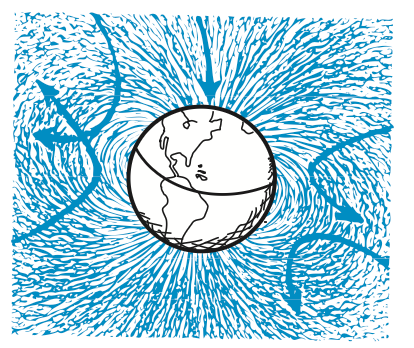
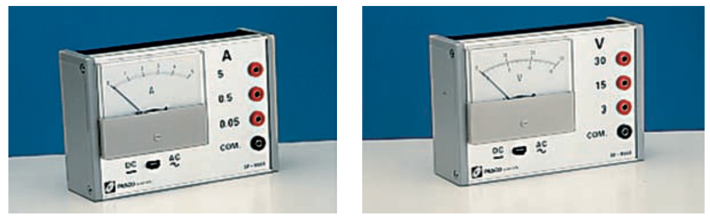

Electromagnets
Electromagnets
A current-carrying coil of wire is an electromagnet. The strength of an electromagnet is increased by simply increasing the current through the coil and the number of turns in the coil. Industrial magnets gain additional strength by having a piece of iron within the coil. Electromagnets powerful enough to lift automobiles are a common sight in junkyards. Magnetic domains in the iron core are induced into alignment, adding to the field. For extremely strong electromagnets, such as those used to control charged-particle beams in high-energy accelerators, iron is not used because, beyond a certain point, all of its domains are aligned. The magnet is said to be saturated, and increasing the electric current flowing around the core no longer affects the magnetization of the core itself and it no longer adds to the field.

Figure 24.11 was omitted because no matching captured image was supplied.
Electromagnets need not have iron cores. Electromagnets without iron cores are used in magnetically levitated, or “maglev,” transportation. Figure 24.11 shows a maglev train, which has no diesel or other conventional engine. Maglev trains are already operating in China and Japan, and various designs are still being engineered. In one design already in commercial use, levitation is accomplished by magnetic coils that run along the track, called a guideway. The coils repel large magnets on the train’s undercarriage. Once the train is levitated a few centimeters, power is supplied to the coils within the guideway walls that propels the train. This is accomplished by continually alternating the electric current fed to the coils, which continually alternates their magnetic polarity. In this way a magnetic field pulls the vehicle forward, while a magnetic field farther back pushes forward. The alternating pushes and pulls produce a forward thrust. Since maglev trains float on a cushion of air, the friction that accompanies conventional trains is eliminated. Maglev speeds, about half the speed of commercial aircraft, are limited only by air friction and passenger comfort. Watch for expansion of this growing technology.
Superconducting Electromagnets
The most powerful electromagnets without iron cores use superconducting coils through which large electric currents flow with ease. Recall from Chapter 22 that there is no electrical resistance in a superconductor to limit the flow of electric charge and, therefore, no heating, even if the current is enormous. Electromagnets that utilize superconducting coils produce extremely strong magnetic fields—and they do so very economically because there is no heat loss (although energy is used to keep the superconductors cold). At the Large Hadron Collider in Geneva, Switzerland, superconducting magnets guide high-energy particles around an accelerator 17 miles in circumference. Superconducting magnets are used in magnetic resonance imaging (MRI) devices in hospitals.
Whether superconducting or not, electromagnets are part of everyday life. They’re in sound systems, in electric motors, in our automobiles, and even in shredded garbage recycling systems to remove metal bits. Cheers for electromagnets.
Magnetic Forces
Magnetic Forces
On Moving Charged Particles
A charged particle at rest will not interact with a static magnetic field. But if the charged particle is moving in a magnetic field, the magnetic character of a charge in motion becomes evident. It experiences a deflecting force.6 The force is greatest when the particle moves in a direction perpendicular to the magnetic field lines. At other angles, the force is less, and it becomes zero when the particles move parallel to the field lines. In any case, the direction of the force is always perpendicular to the magnetic field lines and to the velocity of the charged particle (Figure 24.13). So a moving charged particle is deflected when it crosses through a magnetic field, but when it travels parallel to the field, no deflection occurs.

This deflecting force is very different from the forces that occur in other interactions, such as the gravitational forces between masses, the electrical forces between charges, and the magnetic forces between magnetic poles. The force that acts on a moving charged particle does not act along the line that joins the sources of interaction but, instead, acts perpendicularly to both the magnetic field and the electron beam.
We are fortunate that charged particles are deflected by magnetic fields. Charged particles in cosmic rays are deflected by Earth’s magnetic field. Although Earth’s atmosphere absorbs most of these, cosmic-ray intensity at Earth’s surface would be much greater without Earth’s protective magnetic field.

On Current-Carrying Wires
Simple logic tells you that if a charged particle moving through a magnetic field experiences a deflecting force, then a current of charged particles moving through a magnetic field also experiences a deflecting force. If the particles are trapped inside a wire when they respond to the deflecting force, the wire will also be pushed (Figure 24.15).

If we reverse the direction of the current, the deflecting force acts in the opposite direction. The force is strongest when the current is perpendicular to the magnetic field lines. The direction of force is not along the magnetic field lines or along the direction of current. The force is perpendicular to both field lines and current. It is a sideways force.
We see that, just as a current-carrying wire will deflect a magnet such as a compass needle (again, as discovered by Oersted), a magnet will deflect a current-carrying wire. Discovering these complementary links between electricity and magnetism created much excitement, and people began harnessing the electromagnetic force for useful purposes almost immediately—with great sensitivity in electric meters and with great force in electric motors.
Electric Meters
The simplest meter to detect electric current is a magnet that is free to turn—a compass. The next simplest meter is a compass in a coil of wires (Figure 24.16). When an electric current passes through the coil, each loop produces its own effect on the needle, so a very small current can be detected. A sensitive current-indicating instrument is called a galvanometer, named after Luigi Galvani, who in the 18th century discovered that dissimilar metals caused twitching in a frog’s leg that he was dissecting.

A common galvanometer design is shown in Figure 24.17. It employs many loops of wire and is therefore very sensitive. The coil is mounted for movement, and the magnet is held stationary. The coil turns against a spring, so the greater the current in its windings, the greater its deflection. A galvanometer may be calibrated to measure current (amperes), in which case it is called an ammeter. Or it may be calibrated to measure electric potential (volts), in which case it is called a voltmeter.


Electric Motors
If we modify the design of the galvanometer slightly, so that deflection makes a complete rather than a partial rotation, we have an electric motor. The principal difference is that in a motor, the current is made to change direction every time the coil makes a half-rotation. After being forced to turn one half-rotation, the coil continues in motion just in time for the current to reverse, whereupon, instead of the coil reversing direction, it is forced to continue another half-rotation in the same direction. This happens in cyclic fashion to produce continuous rotation, which has been harnessed to run clocks, operate gadgets, and lift heavy loads.

In Figure 24.19, we can see the principle of the electric motor in bare outline. A permanent magnet produces a magnetic field in a region in which a rectangular loop of wire is mounted to turn about the dashed axis shown. The current in the loop flips direction with each half-turn, and continuous rotation results.
Any current in the loop moves in one direction in the upper side of the loop and in the opposite direction in the lower side (because charges that flow into one end of the loop must flow out the other end). If the upper side of the loop is forced to the left by the magnetic field, the lower side is forced to the right, as if it were a galvanometer. But, unlike the situation in a galvanometer, the current in a motor is reversed during each half-revolution by means of stationary contacts on the shaft. The parts of the wire that rotate and brush against these contacts are called brushes. In this way, the current in the loop alternates so that the forces on the upper and lower regions do not change directions as the loop rotates. The rotation is continuous as long as current is supplied.
We have described here only a very simple dc motor. Larger motors, dc or ac, are usually manufactured by replacing the permanent magnet with an electromagnet that is energized by the power source. Of course, more than a single loop is used. Many loops of wire are wound about an iron cylinder, called an armature, which then rotates when the wire carries current.
The advent of electric motors brought to an end much human and animal toil in many parts of the world. Electric motors have greatly changed the way people live.
Textbook Sections: 24.6, 24.7
Learning Target: Students will analyze electromagnets and magnetic forces on moving charges and current-carrying wires.
- I can explain that a current-carrying coil of wire is an electromagnet.
- I can describe how increasing current or coil turns affects electromagnet strength.
- I can explain how an iron core can strengthen an electromagnet.
- I can explain that moving charges can experience magnetic forces.
- I can describe how magnetic forces act on current-carrying wires.
- I can connect electromagnets to motors, speakers, maglev systems, relays, and lifting magnets.